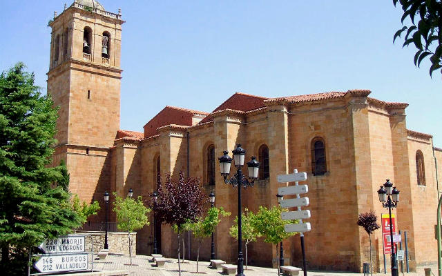
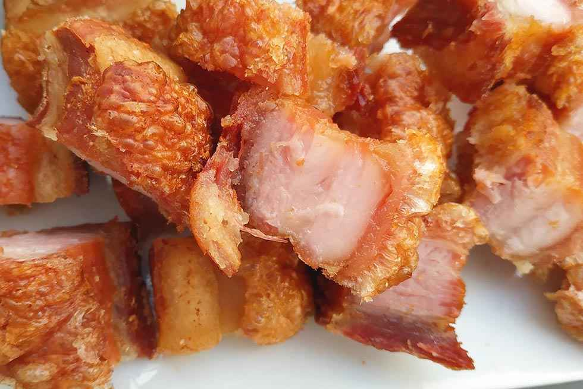

| Provincias | |
|---|---|
| León | |
| Zamora | |
| Salamanca | |
| Ávila | |
| Segovia | |
| Palencia | |
| Burgos | |
| Valladolid |
El municipio de Soria está a orillas del río Duero, en su curso alto, sobre las estribaciones del Sistema Ibérico. La ciudad de Soria se extiende sobre dos cerros (el cerro del Castillo, y el cerro del Mirón) y la cañada que los separa, en la margen derecha del Duero. Pese a que hay un barrio en la margen izquierda del Duero (al otro lado del Puente de Piedra), la ciudad se ha extendido hacia el oeste.
Además de la ciudad de Soria, en el término municipal se encuentran el barrio Las Casas, a 1,2 kilómetros de la ciudad, y tres localidades: Oteruelos, Pedrajas y Toledillo, situadas a varios kilómetros al noroeste. También incluye dos exclaves despoblados, el de los Pinares de Soria al oeste y un pequeño sector en la sierra de Toranzo al este. En su territorio hay tres embalses en el curso del río Duero: Los Rábanos (al sur), Campillo de Buitrago (al noroeste) y La Cuerda del Pozo (en el exclave de Los Pinares de Soria).
El término municipal se extiende un total de 27 240 hectáreas y su altitud oscila entre los 1000 y los 1200 m. Por ejemplo, la ciudad de Soria está a unos 1064 m, el cerro de Santa Ana a 1268 m y el pico del Berrún a 1224 m.A grandes rasgos, el relieve está determinado por el río Duero en su curso alto y las sierras que forman parte de las estribaciones del Sistema Ibérico soriano.
Forma parte de la comarca de Soria y se sitúa a 101 kilómetros de Logroño, a 142 kilómetros de Burgos, a 159 kilómetros de Zaragoza, a 178 kilómetros de Pamplona, a 207 kilómetros de Valladolid y a 231 kilómetros de Madrid.
Soria es un municipio y una ciudad española, situada en el este de la comunidad autónoma de Castilla y León y capital de la provincia homónima. Su población es de 39 398 habitantes (INE, 2019),el 44,4 % de la población provincial. El término municipal tiene una superficie de 271,77 km²,con una densidad de 144,97 hab./km². Situada a unos 1063 metros de altitud, es la segunda capital de provincia española más alta sobre el nivel del mar, tras Ávila.
Aunque existen indicios de asentamientos de la edad del hierro y celtibéricos, Soria entra en la historia propiamente con su repoblación entre el 1109 y el 1114, por el rey aragonés Alfonso I el Batallador. Enclave estratégico debido a las luchas por el territorio entre los reinos de Castilla, Navarra y Aragón, Soria pasó a formar parte de Castilla definitivamente en 1134, durante el reinado de Alfonso VII. En Soria nació Alfonso VIII, y tenía establecida su corte Alfonso X cuando recibió la oferta al trono del Sacro Imperio Romano-Germánico. En Soria murió el depuesto rey Jaime IV de Mallorca, y se casó en primeras nupcias Juan I de Castilla. Pujante durante la Baja Edad Media gracias a su situación fronteriza y su extensa cabaña ovina, Soria entró luego en una lenta decadencia durante los siguientes siglos. Sufrió daños en la Guerra de Sucesión y, más graves, durante la Guerra de la Independencia. La ciudad conserva un importante patrimonio arquitectónico (extensa muralla medieval, palacios renacentistas e iglesias románicas) y es sede del Museo Numantino (con piezas de la cercana ciudad celtíbera de Numancia).
Actualmente, su población de 39 112 habitantes hace de Soria la capital de provincia menos poblada de Castilla y León y la segunda menos poblada de España (tras Teruel). Es particularmente importante en su economía la industria agroalimentaria, y un creciente turismo atraído por su patrimonio cultural. Soria fue mencionada por la UNESCO como buen ejemplo al incluir la dieta mediterránea en su lista Representativa del Patrimonio Cultural Inmaterial de la Humanidad.También está bajo consideración su inclusión como Reserva de la Biosfera
Foto extraida de destinocastillayleon.es
Las principales localidades son Soria,San Esteban de Yague,San Esteban de Gormaz,Ólvega y Burgo de Osma.
Su superficie es de 10 306,42 km² y está situada en el extremo oriental de la comunidad autónoma de Castilla y León. Limita con la comunidad autónoma de La Rioja y con las provincias de Zaragoza (Aragón), Guadalajara (Castilla-La Mancha), Segovia y Burgos (Castilla y León).
Con un 2,4 % de la superficie nacional, Soria tiene una población que representa tan solo un 0,2 % del total del país y con tendencia descendente. En 2014 el número de nacimientos ascendió a 643 mientras que el de defunciones fue de 1141, dando lugar a un crecimiento vegetativo negativo de 498 personas
La provincia de Soria tiene un alto índice de despoblación. Soria es la provincia menos poblada de España, según el censo del 2018 del Instituto Nacional de Estadística, lo que la convierte en uno de los territorios más despoblados de la Unión Europea (8,6 hab./km² en 2018). Este índice está muy alejado de los valores medios de España y de la Unión Europea (92,37 hab./km² y 117 hab./km², respectivamente también en 2018).
A ello hay que añadir que la provincia de Soria ha perdido más del 40 % de su población en los últimos 50 años, que presenta la tasa de envejecimiento mayor de la Unión Europea (el 26,7 % de su población tiene más de 65 años, frente al 16,9 % de la media española) y que 116 de sus 183 municipios cuentan con menos de 100 habitantes.
Además la población de la provincia de Soria, se concentra en la capital y algunos municipios adyacentes; algunos municipios de la comarca de Pinares; y en las antiguas cabeceras de comarca (Almazán, Burgo de Osma y Arcos de Jalón) que también están en una dinámica regresiva. El resto de municipios se encuentran en una situación demográfica muy grave, camino de la despoblación total. Sobre todo se observa en la parte más oriental de la provincia, en las comarcas de Campo de Gómara, Moncayo, Tierras Altas y la de Almazán.
Los ríos que recorren los dominios sorianos han alimentado pueblos y agros; unos vierten al Ebro por el norte en las Tierras Altas y las del Moncayo; y por el sur en la Tierra de Medinaceli. Otros, muchos…, de cursos aplacibles o bravos transitan por serranías y valles por los que también lo hicieron los caminos históricos
Pero sin duda el Duero es el gran río de Soria; su trazado ha tenido, y tiene, mucho que ver en la formación del paisaje y la historia de la actual provincia de Soria. Las fuentes primigenias brotan en los Picos de Urbión, al norte, en el Sistema Ibérico, a más de 2000 metros de altitud. Gira hacia el este entre pinares y embalses de regulación y ocio para visitar la ciudad de Soria trazando una gran curva junto a Numancia. Más adelante encauza aguas cada vez más caudalosas hacia el sur, hacia la villa fortificada de Almazán regando extensos campos de cereal y pinares resineros.
En el actual cerro del Castillo se han descubierto restos de un asentamiento de la Edad del Hierro y celtibérico, supeditado este último a la ciudad celtíbera de Numancia, situada a siete kilómetros al norte de la actual ciudad de Soria. Numancia fue la ciudad más importante de los Arévacos, famosa por sus conflictos con Roma en el siglo ii a. C. Al frente de una coalición de celtíberos, derrotó en el año 153 a. C. a un ejército de 30 000 hombres mandados por el cónsul Quinto Fulvio Nobilior, dando inicio a veinte años de luchas intermitentes. Finalmente, Publio Cornelio Escipión Emiliano puso sitio a la ciudad con un largo cerco, capturándola en el verano del año 133 a. C., tras el suicidio de gran parte de su población. Numancia fue repoblada con pueblos celtíberos vecinos, y sufrió nuevas destrucciones durante las Guerras Sertorianas. En el siglo iii comienza su decadencia definitiva, y generalmente se considera que la ciudad dejó de ser ocupada en el siglo iv d. C., aunque nuevos hallazgos sugieren un asentamiento visigodo en el siglo vi d. C
En el periodo previo a la Reconquista, cuando estaba bajo dominio árabe, hay varias menciones controvertidas a Soria. En el año 869, Solimán ben Abús se levantó en Medina-Soria contra el emir de Córdoba, quien envió a su hijo, Al-Hakan, para sofocar el alzamiento. En el año 1079, Al-Kádir ofrece Soria y otra población a Alfonso VI.
Es posible que en la actual Soria existiese una población ya durante los siglos x y xi. Miguel Martel da argumentos apoyando esta hipótesis,26 incluyendo la antigüedad de los restos del anacoreta San Saturio, y la mención de dos caballeros sorianos (Álvar Salvadores y Antolín Sánchez) como capitanes del Cid. Algunos investigadores apuntan a la posibilidad de que fuera conquistada por Fernán González (929-970), primer conde independiente de Castilla, y volviese a pasar a manos musulmanas con Almanzor (944-1002).27 En cualquier caso, por aquel entonces Soria sería una población de poca importancia, ya que no es mencionada al fijarse los límites entre las diócesis de Osma y Burgos durante el Concilio de Husillos (1088), ni en otros documentos.27 La falta de menciones a Soria antes del siglo xii puede deberse también a la preponderancia de la cercana Garray, bajo el cerro de la antigua ciudad de Numancia, localidad que fue definitivamente conquistada en el 1076 por el Reino de Navarra.
Entre 1109 y 1114, el rey Alfonso I el Batallador conquistó definitivamente Soria y la repobló. Alfonso I el Batallador concedió, también por esas fechas, el Fuero Breve, el primer reglamento jurídico de la villa que solo conocemos por fuentes indirectas. Fueron los primeros alcaides conocidos los aragoneses Íñigo López (1117-1125) y Fortún López (1127-?). En los siglos siguientes, Soria fue enclave estratégico debido a las luchas por el territorio entre los reinos de Castilla y León, Navarra y Aragón. La separación entre Doña Urraca y Alfonso I dejaría Soria en manos de este último. Alfonso VII, tras la muerte de su madre Urraca en 1126, no tardó en reclamar las plazas de Soria, Almazán y Medinaceli ocupadas por su padrastro Alfonso. A la muerte de este último, en 1134, Soria pasaría a formar parte de Castilla de forma definitiva.
Como muestra de su pujanza, Soria consiguió uno de los preciados puestos de representación entre las dieciséis ciudades con derecho a enviar procuradores a las Cortes del reino de Castilla, y fue sede de alguna de sus reuniones (por ejemplo, la de 1380). En contrapartida, la inestabilidad política del último tercio del siglo xiv permitió que perdiese su condición de realengo, y que Enrique II la cediese al mercenario francés Bertrand Du Guesclin como pago por su apoyo en la Primera Guerra Civil Castellana contra Pedro I de Castilla. La cesión topó con la abierta hostilidad de una población que no deseaba abandonar el dominio real, y las tropas de Du Guescin tuvieron que tomar al asalto la ciudad, en 1369. Tras la renuncia de Du Gueslin, la ciudad siguió (hasta 1539) concediéndose en señorío a miembros de la familia real. Así, fue infante de Soria el futuro Juan I de Castilla, y duquesas de Soria las reinas Catalina de Lancaster, María de Aragón e Isabel de Portugal.
Durante los siglos x y xi la zona de Soria era importante estratégicamente por su situación junto al Duero, que marcaba el límite entre los dominios cristianos y musulmanes en la denominada «marca del Duero» o «línea del Duero». Los primeros controlaban el norte desde San Esteban de Gormaz, mientras que los segundos se hacían fuertes en el imponente castillo de Gormaz. La definitiva conquista de esta plaza por los cristianos en el 1060, y de Toledo en el 1085, abrieron la puerta a la conquista y repoblación de Soria.
Es aquí donde toma una decisión definitiva queriendo quizás contemplar la monumental villa de El Burgo de Osma y los viñedos de la Denominación de Origen que lleva su nombre en las tierras de la Ribera. Finalmente torna con determinación hacia el oeste, con destino al gran océano.
Fue durante siglos frontera entre reinos medievales y culturas que cincelaron la piedra en arquivoltas, canecillos, capiteles y construcciones defensivas de la Extremadura soriana.
Video extraido del canal de Youtube "Producciones Glaciar."
El Ayuntamiento mantiene una amplia y variada oferta cultural durante todo el año con el Palacio de la Audiencia como centro neurálgico con sus salas de exposiciones, conferencias y teatro. A esta actividad que se incluye en cada campaña, a la que se puede acceder desde la página web, hay que añadir la oferta de salas expositivas en la distintos puntos de la ciudad y la organización de eventos con nombre propio como el Otoño Musical Soriano, Enclave de Agua y el Certamen Internacional de Cortos además de otras citas que no pueden caer en el olvido con los grandes poetas vinculados a la ciudad como hilo conductor: Machado, Bécquer, Gaya Nuño
La Semana Santa de Soria, declarada Fiesta de Interés Turístico de Castilla y León, es uno de los múltiples atractivos que posee esta Muy Noble, Muy Leal y Antiquísima Ciudad. Semana Santa silenciosa y austera, devocional; fiel reflejo de la sociedad soriana que la sustenta. Destaca por su intenso sentimiento religioso.
Sus tallas se encuentran a la altura de las gandes tallas castellanas (de gran valor artístico en escultura policromada) que participan en la Semana Santa en Castilla y León. Como muestra de ello, podemos contemplar durante la Semana de Pasión la bella imagen del Cristo del Humilladero (siglo XVI), atribuido a Juan de Juni o a su escuela. Todo ello convierte sus procesiones, y en especial la Procesión General del Santo Entierro de Cristo la tarde-noche de Viernes Santo, en muestras de religiosidad de corte familiar, íntimo, propio de los sorianos y forasteros que las contemplan.
Procesiones tradicionales, siempre a la misma hora y pasando por la calle del Collado; como el Vía Crucis de las Santas Caídas y la Procesión del Silencio la noche de Jueves Santo, o la Predicación de las Santas Palabras la mañana de Viernes Santo desde los siete balcones de costumbre. Como escenario, las viejas callejas, callejones, plazas y plazoletas de una mágica ciudad que todavía conserva el encanto mágico de antaño. Existen rincones en los cuales el tiempo se resiste a avanzar, parece detenido a perpetuidad; especialmente al caer el sol. Tras tres años de recopilación de información por parte de la Junta de Cofradías de Semana Santa de la Ciudad, el 8 de agosto de 2008 se publicó en el Boletín Oficial de Castilla y León la Orden de la Cosejería de Cultura y Turismo por la que se declara Fiesta de Interés Turístico de Castilla y León a la Semana Santa Soriana.
El Carnaval de Soria, Castilla y León (España), comienza siempre el jueves anterior al Miércoles de Ceniza.
Los carnavales de Soria comienzan con una arraigada tradición, el Jueves Lardero, día en el que es típico merendar pan, chorizo y huevo. El resto de los días transcurren con los habituales desfiles de disfraces para mayores y pequeños, concluyendo con el Entierro de la Sardina, en el que una escultura de este pescado es quemada y arrojadas sus cenizas al río Duero.
Las referencias más antiguas del carnaval en la capital son las que se refieren al Jueves Lardero, documentado al menos desde el siglo XVII, tradición que consistía en ir a merendar a los parajes cercanos a la ciudad. En sus orígenes el Jueves Lardero no marcaba el inicio de los carnavales y los chicos reclamaban la gallofa por las casas para poder preparar luego la merienda. También está documentada otra tradición, ahora perdida, que se realizaba el Lunes de Carnaval y que consistía en correr dos toros de fuego construidos en madera. El último día se realizaba el Entierro de la Sardina, con quema de la sardina en el río Duero.
Video extraido del canal de Youtube "Soria Ni Te La Imaginas."
Los inigualables paisajes de Soria sorprenden por su variedad y singularidad. Su situación dentro de la Península, como zona de cruce entre la meseta castellana y el valle del Ebro, explica que estas tierras sean, en realidad, una síntesis del paisaje español.
Con estos principios, en un territorio defendido por altas sierras, que tutelan y orientan el curso del río Duero, hermosos parajes se esconden por doquier. La Laguna Negra, el Cañón del Río Lobos o La Fuentona de Muriel, son sólo la punta del iceberg de una geografía marcada por la presencia de amplios bosques, extensas parameras y abundantes pastizales. Tierras pedregosas y peladas conviven, entre multitud de sierras, con pequeños valles enmarcados por riscos y cortados que otorgan personalidad propia a cada rincón.
Pero Soria, que ocupa la meseta más alta de España, enriquece aún más si cabe sus horizontes con la calidad de sus cielos, puros y limpios, que arropan todo con una luz sobrenatural que inspira a los poetas. Tierra, en suma, de antigua historia que despierta misterios y leyendas inimaginables.

Foto extraida de Soriaestademoda.org
La Diputación Provincial de Soria convocó en 1991 el I Premio de Recopilación de Tradiciones Populares, a través de sus Departamentos de Cultura y Servicios Sociales, al que se presentaron medio centenar de trabajos con referencias a 70 localidades y que ocupan un total de unas mil páginas, doscientas de ellas manuscritas.
Una vez consultadas para el presente artículo ese millar de páginas el resultado es el que se ofrece a continuación que, el etnólogo, estudioso o todo aquel que esté interesado, conviene que complemente y complete especialmente con los dos tomos del Memorial de Soria de Miguel Moreno y Moreno,la obra Labrantíos de José María Martinez Laseca, La Soria Mágica de Antonio Ruiz Vega, Ecos Rurales de Leopoldo Torre García, el libro De hoy en un ... año escrito por Martinez Laseca y Luis Diaz Viana, y el más reciente de todos, Soria, pueblo a pueblo, cuyas autoras son María Isabel y María Luisa Goig Soler.
Asimismo, en lo que respecta a la Semana Santa, fruto de este I Premio de Recopilación de Tradiciones Populares son dos artículos similares que me publicaron en los dos periódicos sorianos en abril de 1993, de ahí que no sea tratada ahora pues lo fue, en profundidad, en aquel momento. Igualmente puede ser útil mi artículo Calendario Etnográfico Soriano, publicado en el número 8 de esta Revista de Soria.
El citado Premio de Recopilación se ha plasmado también con la reciente publicación por parte de la Diputación del primer trabajo galardonado, Jotas de Ronda, de Paulino García de Andrés. Y en esta misma Revista de Soria abrimos sus páginas con un reportaje fotográfico del segundo accesit, Recuerdos del tío Manuelón, de la Asociación Cultural San Antonio de Barca.
Debo advertir al lector que en la síntesis que expongo "son todos los que están, pero no están todos los que son". El casi medio millar de personas que, en sus trabajos colectivos, enviaron a la Diputación (Departamentos de Cultura y de Servicios Sociales) sus recopilaciones de tradiciones no las desarrollaron en profundidad y, en ocasiones, faltan bastantes datos acerca del momento en que se efectuaban, cómo se hacía, en qué consistían exactamente..., y sobre todo hay muchas ausencias, muchas tradiciones sin citar ni siquiera. No obstante el material aportado es muy valioso para la todavía naciente Etnografía Soriana y por ello la labor realizada por ese medio millar de personas es de agradecer y reconocer.
Toda una cultura tradicional secular ha desaparecido de Soria en este siglo como queda bien patente al observar las decenas de ritos que ya no se llevan a cabo en nuestros pueblos. La emigración rural, con el consiguiente descenso poblacional, disminución de jóvenes y mocerío, e incremento de la tercera edad, han sido determinantes para que se hallan ido extinguiendo a marchas forzadas, quedando tan sólo unas pequeñas muestras, entre ellas las más significativas, afortunadamente: Sanjuanes de Soria, Soldadesca de Iruecha, Paso del Fuego y Móndidas de San Pedro Manrique, Barrosa de Abejar..., etc.
Una de las costumbres más celebradas en los pueblos eran las llamadas Tinieblas que tenían lugar durante la Semana Santa con un carácter carnavalesco, alegre y desenmfadado.
Mientras cura y sacristán cantaban el Miserere, en latín, un monaguillo iba apagando las doce velas colocadas cerca del altar en un tenebrario de forma triangular y al apagar la última el interior de la iglesia quedaba completamente a oscura, momento en el que comenzaba un verdadero estruendo armando todo el ruido posible con carracas, matracas, palos, zapatos.., etc.
Aprovechando este momento de oscuridad y de ruido los chicos y los mozos se dedicaban a clavar las faldas o enaguas de las mujeres en los suelos de madera o en los bancos, provocando después el consiguiente jolgorio al darse la luz.
Santa Agueda ha sido celebrada en diversos pueblos sorianos constando, por ejemplo, su festejo documentado en Renieblas desde antes de 1515. No obstante no fue exclusivamente un día matriarcal puesto que en algunas localidades los mozos y casados también lo celebraban a su manera.
Uno de los mejores placeres de realizar turismo sin duda es la gastronomía. Nuestra ciudad no solamente cuenta con monumentos en sus calles y plazas; también los tiene en sus fogones. Si hay una buena forma de conquistar al visitante es ofrecerle como recompensa tras los paseos recorriendo la ciudad una grata experiencia gastronómica.
Buen exponente de la mejor mesa castellana, la gastronomía tradicional soriana, como el mismo adjetivo indica se basa en una cocina de elaboración sencilla, cuya excelente materia prima no necesita de más disimulo que unas buenas manos, un fogón apropiado y un poco de agua fresca.
Tentaciones en forma de tira de panceta adornan vitrinas y barras de bares y restaurantes de la ciudad. Los torreznos o torrenillos, son tiras de panceta adobada y frita de una manera especial para conseguir una corteza lo más crujiente posible. Apetitoso y excelente tentempié que sienta bien a cualquier hora y que se ha convertido en estrella de los almuerzos sorianos
laborada de manera artesanal y con una producción controlada que garantiza su excelente calidad, la mantequeilla fue el primer producto soriano distinguido con el sello de Denominación de Orígen. Salada, dulce o natural, este exquisito derivado lácteo tiene fama más que justificada en el panorama gastronómico nacional y es fácil de encontrar en las pastelerías o tiendas de alimentación, envasada o bien en tarrinas, latas o rollos.
Foto extraida de elmirondeSoria.es